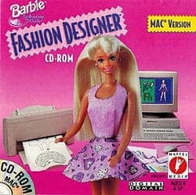
바비 패션 디자이너
1996년 미국에서 나온 여성향 게임인데
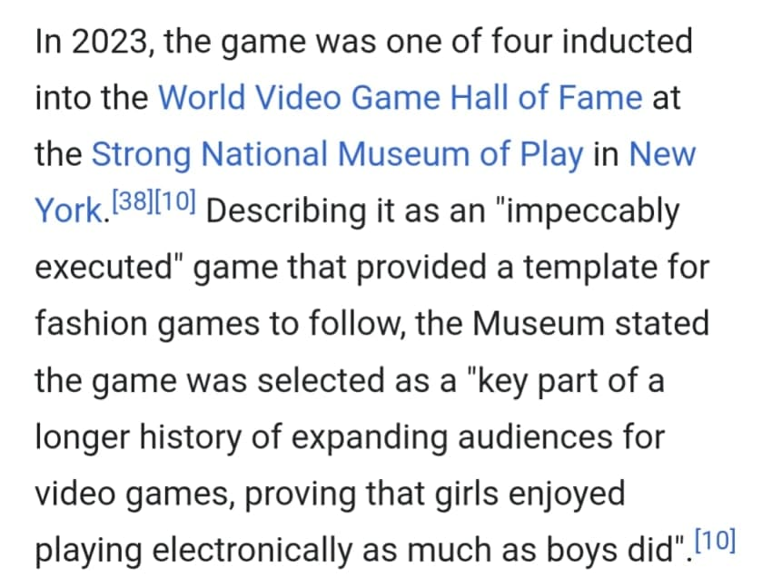
"비디오 게임 이용자 저변을 남성에서 여성까지 확대해온 긴 역사의 핵심 파트"라는 공로로 2023년에 명예의 전당에 헌액됨
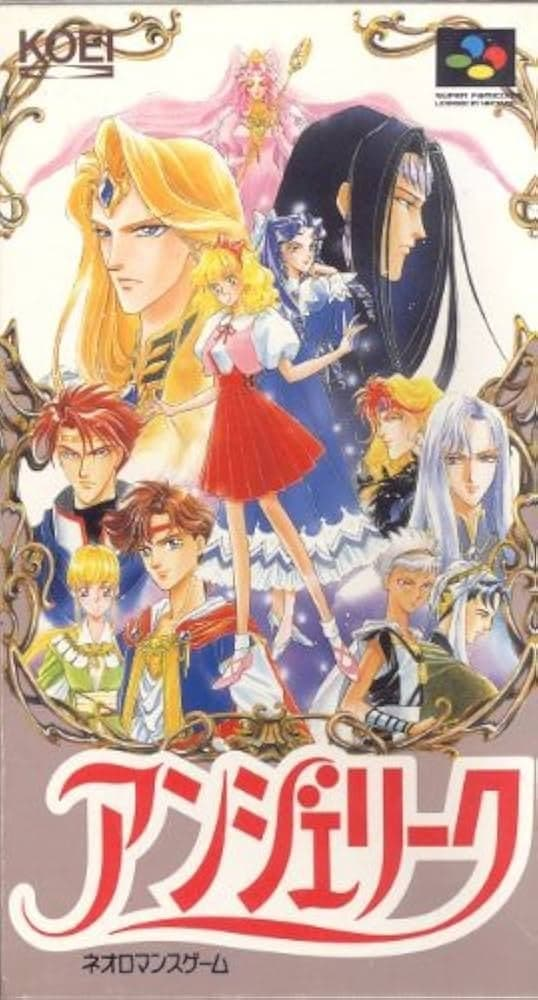
근데 여성향게임 역사는 일본의 안젤리크가 2년 더 빠름 ㅋㅋㅋㅋㅋㅋ
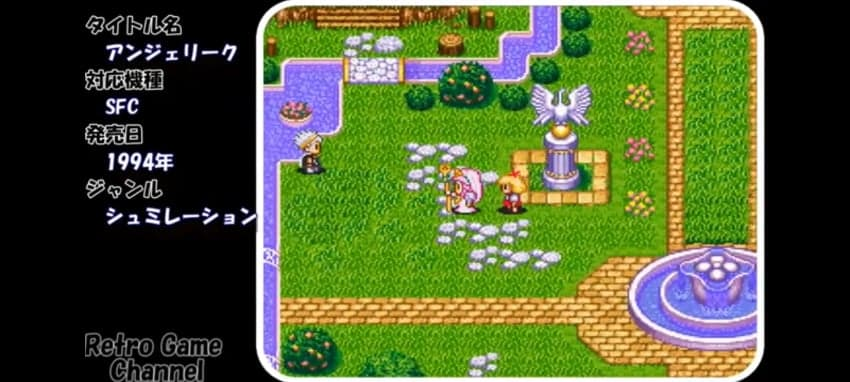
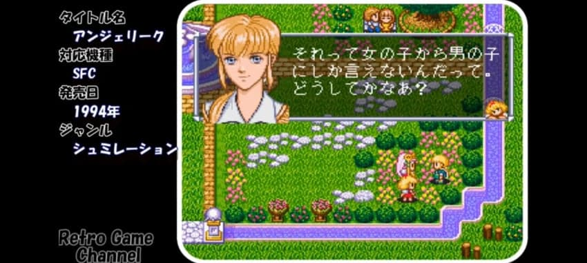
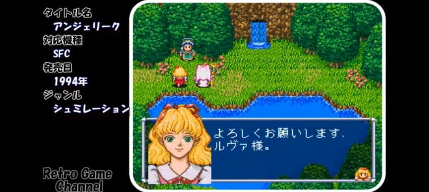
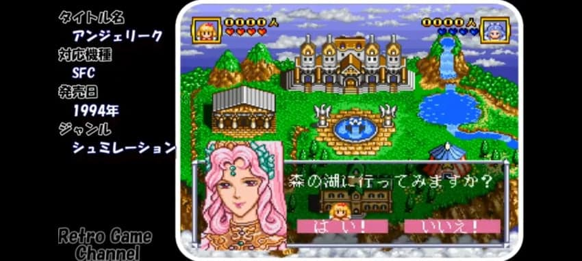
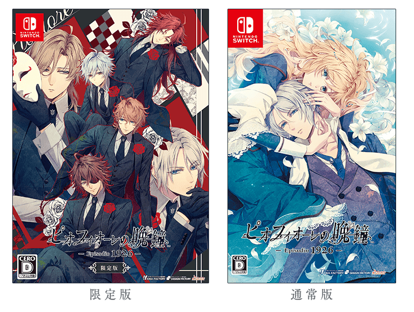
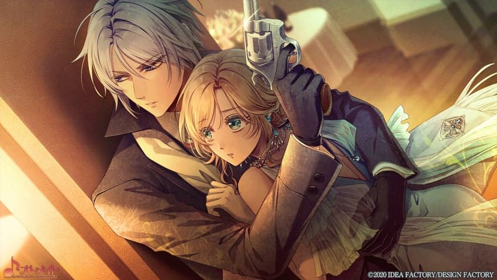
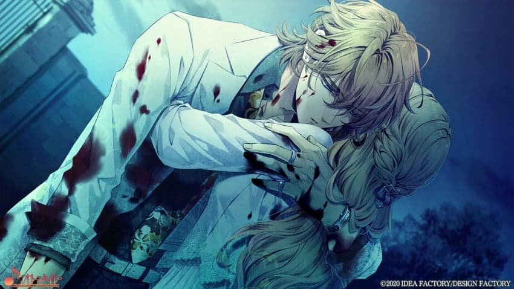
옛날 얘기만 갖고 뭐가 낫네 따지려는 건 아니고, 서양 사람들 눈에 구시대적인 여성상이 좀 보일 뿐이지 서양 여성 게이머들이 요즘 추구하는 여성이 만들고 여성이 소비하는 여성이 주인공인 게임 시장이 일본엔 30여 년 전부터 구축돼 있었다는 거
완전 미국적인 논제만 아니라면 '여성이 이렇게 저렇게 활약하는 작품 왜 없음?' 류의 질문 대부분 일본겜 찾아보면 하나쯤은 답 나올 걸?
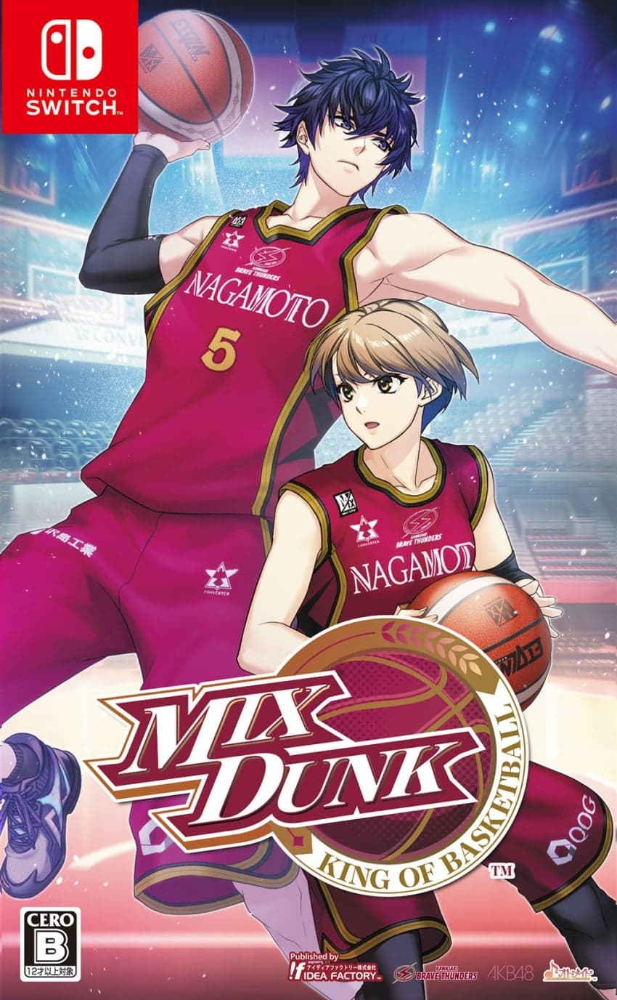
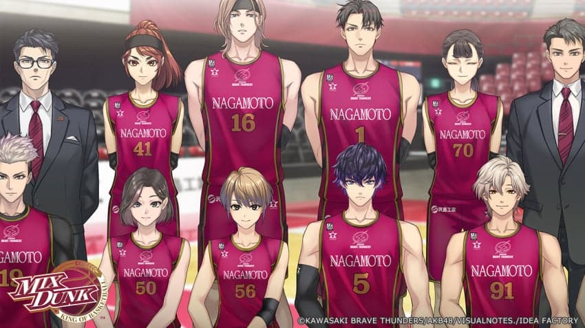
이런 여성향게임 시장은 지금도 꾸준히 돌아가고 있음 이번주 목요일에 혼성 농구 리그 소재로 신작 하나 또 나올 거임
아 스위치 게임이라 이제 나도 닌스퍼거로 몰리나? ㅎㅎㅎㅎ
댓글
수집 당시 댓글 100개
거스 · 11.22 23:37:32
· Littlebird/TrueEyes · 11.22 23:45:38
· ㅇㅇ · 11.24 18:17:10
Adriel · 11.22 23:38:19
· Littlebird/TrueEyes · 11.22 23:40:14
칸나즈키 · 11.22 23:38:37
칸나즈키 · 11.22 23:39:13
ㄴㄴ · 11.22 23:39:13
· ㅇㅇ · 11.22 23:48:18
· ㅇㅇ · 11.23 01:34:48
ㅇㅇ · 11.22 23:39:36
· ㅇㅇ · 11.23 07:10:01
생간 · 11.22 23:40:54
· Littlebird/TrueEyes · 11.22 23:42:51
ㅇㅇ · 11.22 23:41:34
저능아 · 11.22 23:48:22
· Littlebird/TrueEyes · 11.23 01:26:37
· 저능아 · 11.23 01:26:57
· Littlebird/TrueEyes · 11.23 01:28:00
ㅇㅇ · 11.22 23:48:27
ㅇㅇ · 11.22 23:53:21
· Littlebird/TrueEyes · 11.23 00:05:06
ㅇㅇ · 11.22 23:57:12
· ㅇㅇ · 11.23 00:18:25
ㅇㅇ · 11.23 00:06:38
삭제됨 · 11.23 00:27:51
· Littlebird/TrueEyes · 11.23 00:31:06
· 리세 · 11.23 00:31:51
따봉이우
· Littlebird/TrueEyes · 11.24 11:54:17
ㅇㅇ · 11.23 00:35:40
아모른직다 · 11.23 00:49:07
ㅇㅇ · 11.23 01:03:08
ㅇㅇ · 11.23 01:25:11
ㅇㅇ · 11.23 01:42:17
ㅇㅇ · 11.23 01:50:17
ㅎㅈ · 11.23 02:02:32
실비치노 · 11.23 02:30:54
ㅇㅇ · 11.23 03:01:31
영¿애 · 11.23 03:56:57
ㅇㅇ · 11.23 04:04:55
ㅇㅇ · 11.23 04:10:08
· ㅇㅇ · 11.23 07:17:47
딜마 · 11.23 04:20:18
· Littlebird/TrueEyes · 11.23 06:59:23
· 딜마 · 11.23 07:05:41
· Littlebird/TrueEyes · 11.23 07:17:38
파양파 · 11.23 06:04:10
ㅇㅇ · 11.23 06:49:03
치르빙 · 11.23 07:23:12
· Littlebird/TrueEyes · 11.23 07:25:07
· 치르빙 · 11.23 07:48:01
ㅇㅇ · 11.23 10:05:40
ㅇㅇ · 11.23 10:19:12
· ㅇㅇ · 11.24 09:17:59
· ㅇㅇ · 11.24 12:26:37
· ㅇㅇ · 11.24 13:44:23
· ㅇㅇ · 11.24 18:24:31
검은젤리 · 11.23 10:46:53
래티래티 · 11.23 10:51:52
· Littlebird/TrueEyes · 11.23 12:19:54
· ㅇㅇ · 11.24 09:19:57
· Littlebird/TrueEyes · 11.24 12:10:34
· ㅇㅇ · 11.24 14:20:45
· Littlebird/TrueEyes · 11.24 22:18:31
ㅇㅇ · 11.23 12:03:46
어린이사랑 · 11.23 15:52:49
· ㅇㅇ · 11.24 18:25:41
ㅇㅇ · 11.23 16:00:18
봇치쟝 · 11.24 09:10:43
· ㅇㅇ · 11.24 18:26:31
· 봇치쟝 · 11.24 19:10:51
ㅇㅇ · 11.24 09:14:11
ㅇㅇ · 11.24 09:20:10
· ㅇㅇ · 11.24 12:27:54
히이잉 · 11.24 09:21:21
히이잉 · 11.24 09:26:29
ㅇㅇ · 11.24 09:42:12
· ㅇㅇ · 11.24 09:54:38
향격쳐 · 11.24 10:01:34
ㅇㅇ · 11.24 10:10:02
· ㅇㅇ · 11.24 10:29:49
· ㅇㅇ · 11.24 11:42:12
· ㅇㅇ · 11.24 11:58:58
· ㅇㅇ · 11.24 18:55:33
· Littlebird/TrueEyes · 11.24 22:16:35
Machiavelli · 11.24 10:34:31
ㅇㅇ · 11.24 10:48:34
ㅇㅇ · 11.24 10:49:27
ㅇㅇ · 11.24 10:56:10
· Littlebird/TrueEyes · 11.24 12:03:40
새벽에글쓰다가 · 11.24 12:04:21
ㅇㅇ · 11.24 12:08:31
ㅇㅇ · 11.24 14:19:25
ㅇㅇ · 11.24 14:59:43
지나가던 · 11.24 16:16:21
ㅇㅇ · 11.24 16:44:47
초등학생이다 · 11.24 18:57:41
ㅇㅇ · 11.24 19:17:28
더블알발음은아르르 · 11.24 21:22:02
· Littlebird/TrueEyes · 11.24 22:12:44